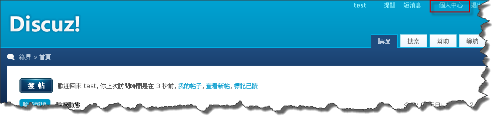
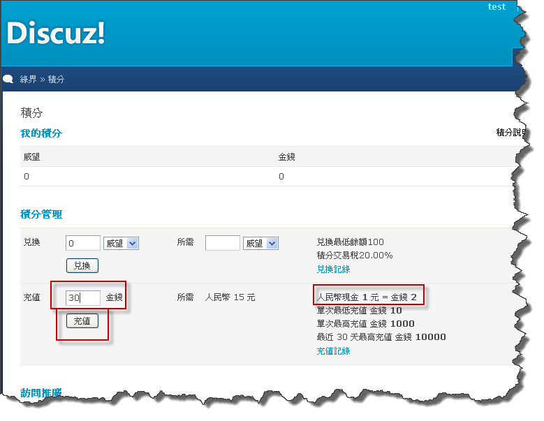
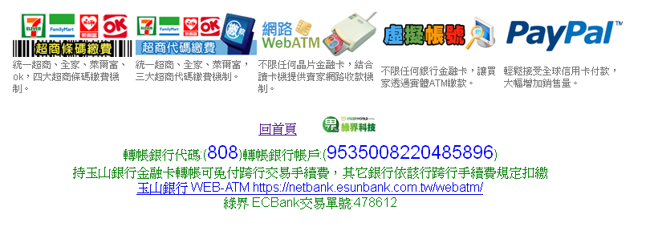
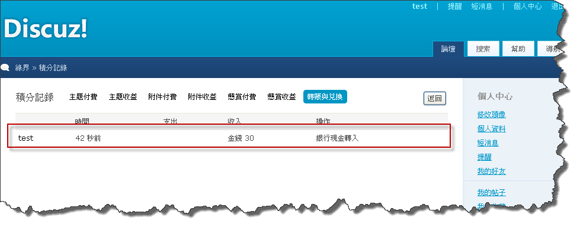

Step 1 - 積分充值說明
請先註冊一個會員
1 請先點選首頁>『個人中心』如下圖所示

2 點選右側『積分』

3 輸入欲充值的金額，右側顯示所需要的實際欲付款的金額(實際為新台幣，教學圖中尚未改成新台幣字樣)

4 若確定您所充值的金額無誤後，選擇綠界金流的圖示，並按下確定

5 選擇一種繳款方式後，按下『我確定要繳款』按鈕


6 登入您的ECBank執行模擬觸發(測試用)，如果為會員真正付款時，不用執行模擬觸發的動作
7 會員可以在『個人中心』>『積分』>『充值紀錄』中查詢充值的狀態


8 管理者可以在上一節的第11點中查詢訂單
教學結束